プログラミング教室からWebシステム開発、芸能事務所経営、医薬品輸出まで手がける合同会社T-BOX・倉持賢一さん。人を起点に事業を育てる「十徳ナイフ」な生き方。
高校生の新卒採用支援から学習教室づくりへ。遠回りの経歴を持つ株式会社BrightLink代表・佐藤拓斗さんが描く「キャリア教育」のロードマップ。
医学部受験指導から企業研修まで、数学の“心のトゲ”を和らげる株式会社数学アカデミー代表・鈴木伸介さんの仕事術。
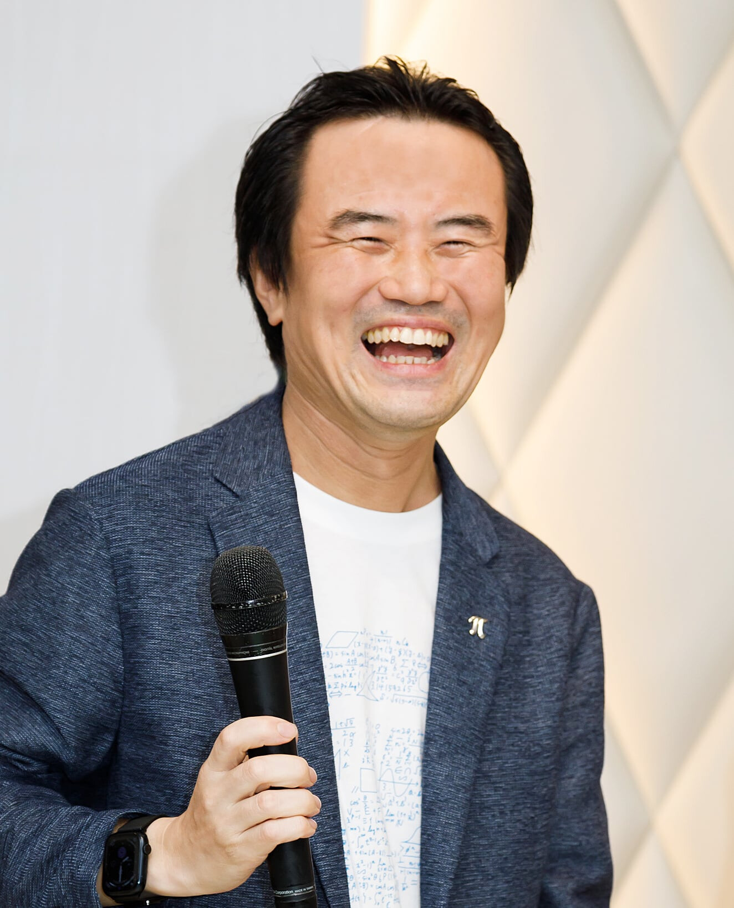
市役所・客室乗務員・医療法人を経て、クリニックで働く人の自信と誇りを育てる武樋史子さん。遠回りに見えたキャリアが一つにつながった軌跡。
スプレッドシートの一本の関数から業務改善と事務代行を育てた、株式会社Andirich代表・木村杏那さん。仲間の力を借りながら歩んできた、等身大の経営者の軌跡。
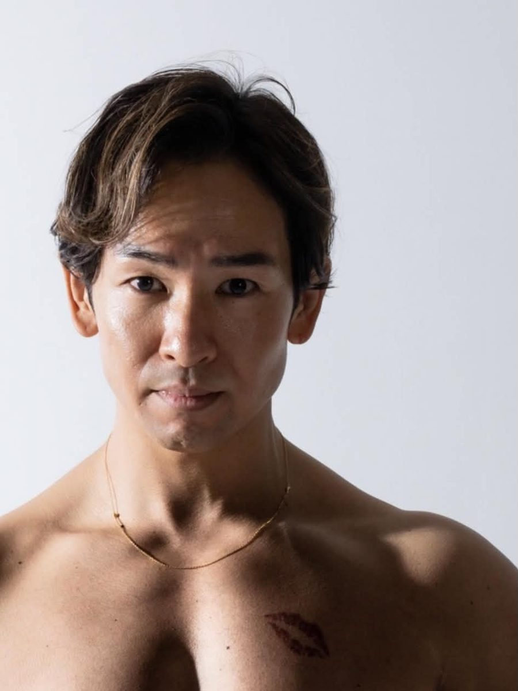
VOL.019 パーソナルトレーニング業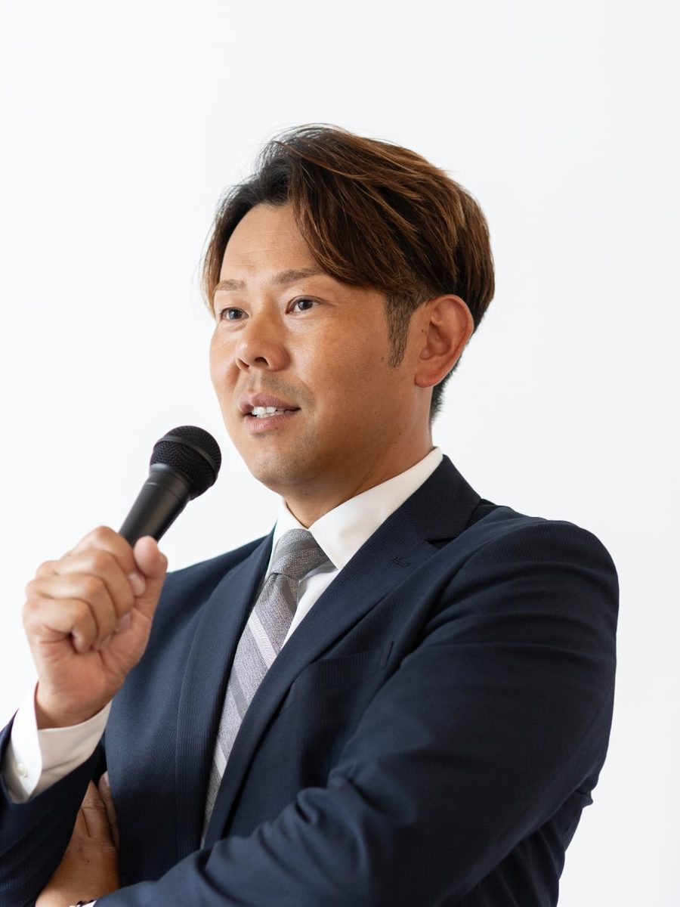
VOL.018 不動産・通信取次業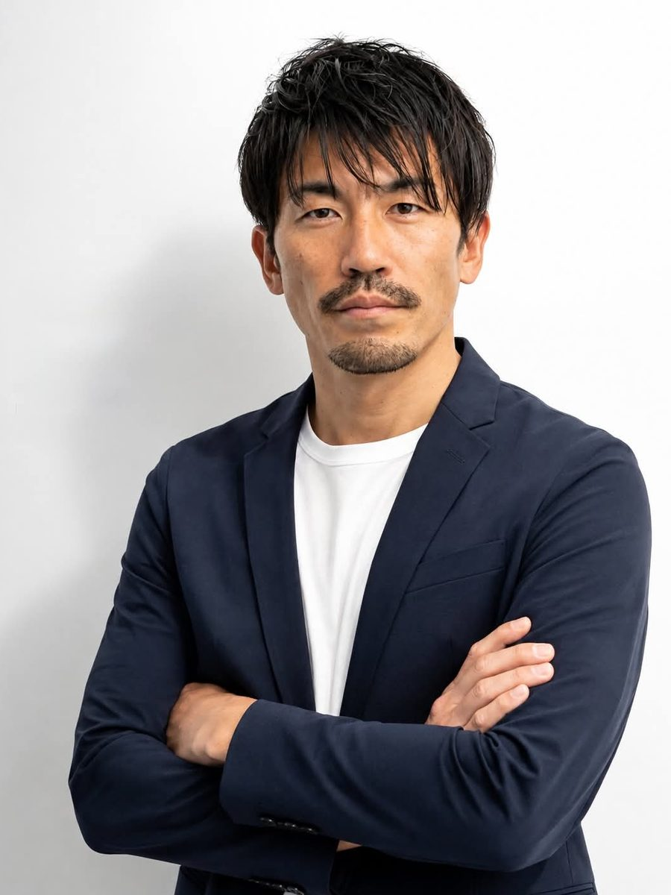
VOL.017 アスリート支援業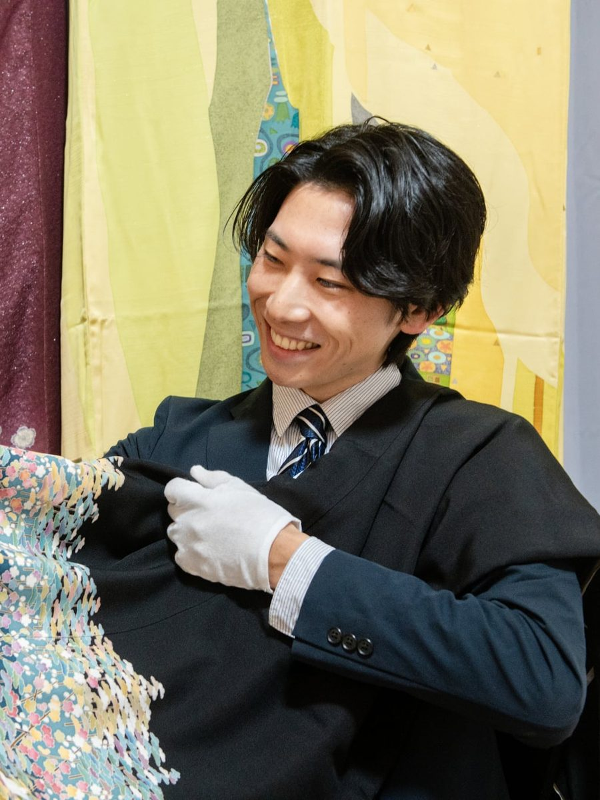
VOL.014 出張買取業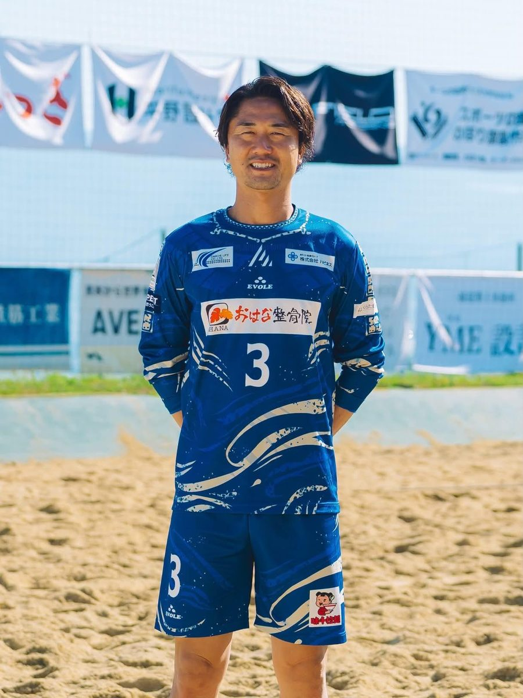
VOL.012 スポーツウェア製造業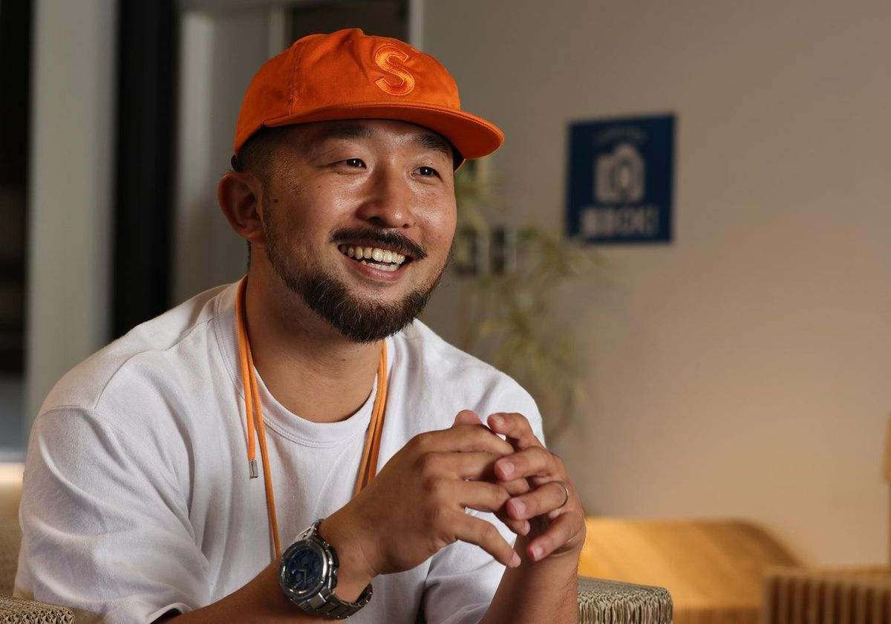
VOL.011 段ボール製造業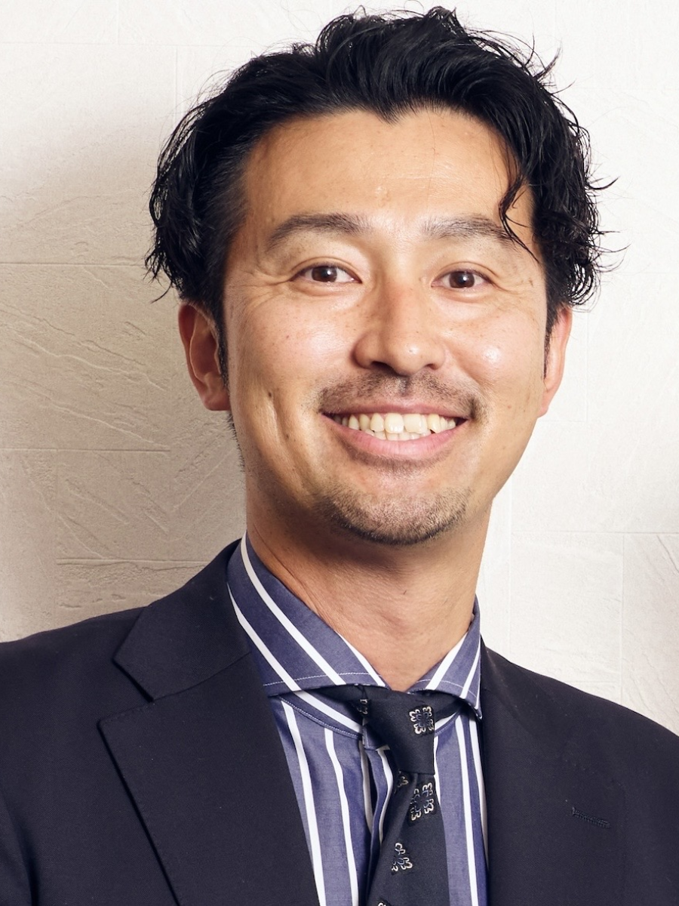
VOL.009 キャリア支援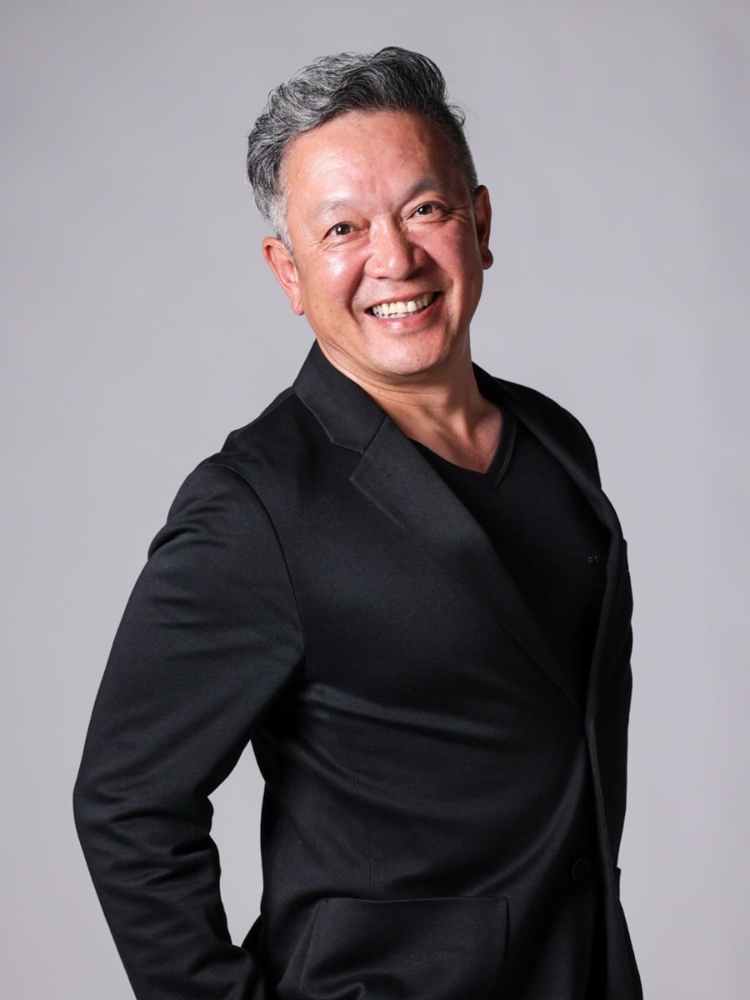
VOL.008 印刷・地域アプリ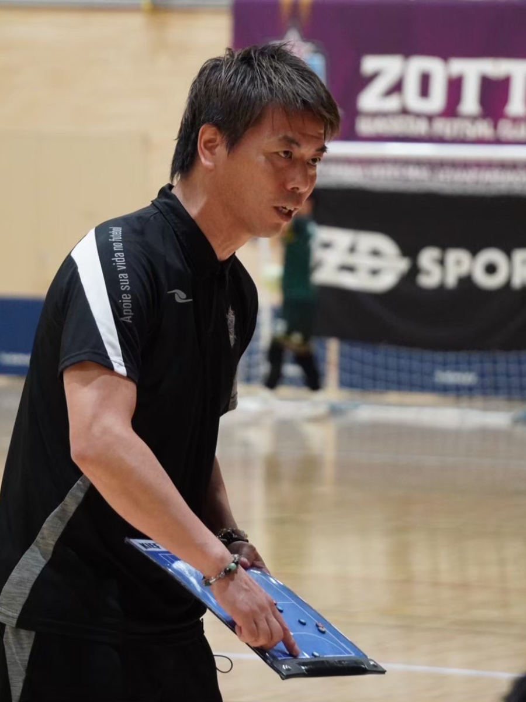
VOL.007 スポーツアパレル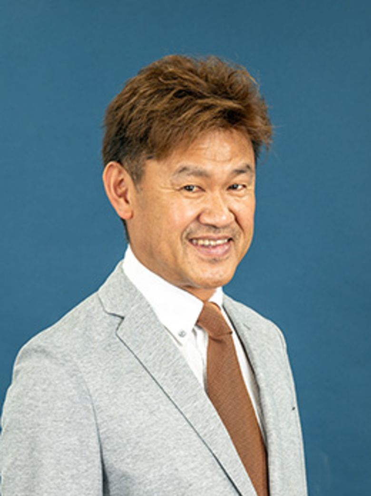
VOL.004 スポーツ施設施工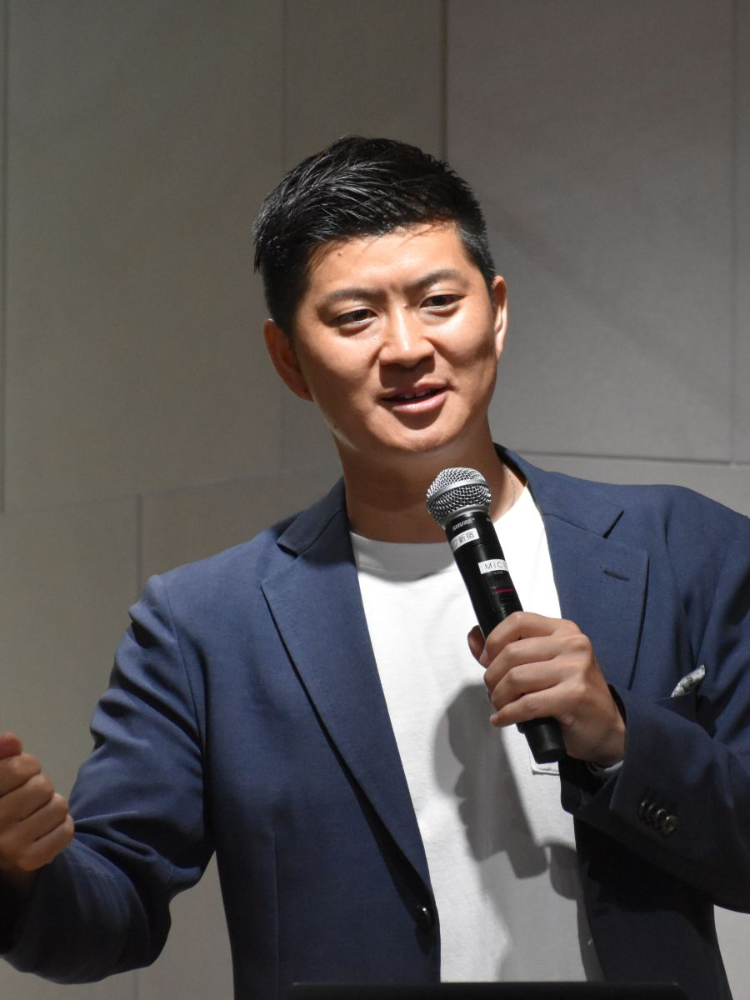
VOL.003 国際人材育成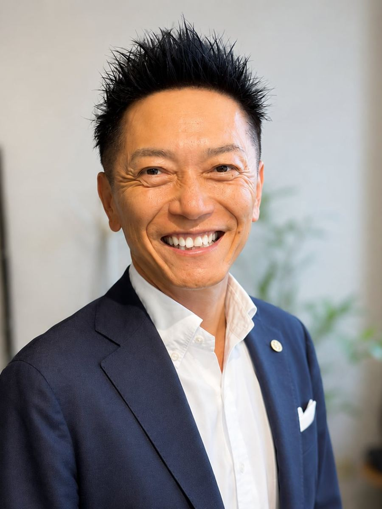
VOL.002 経営コンサルティング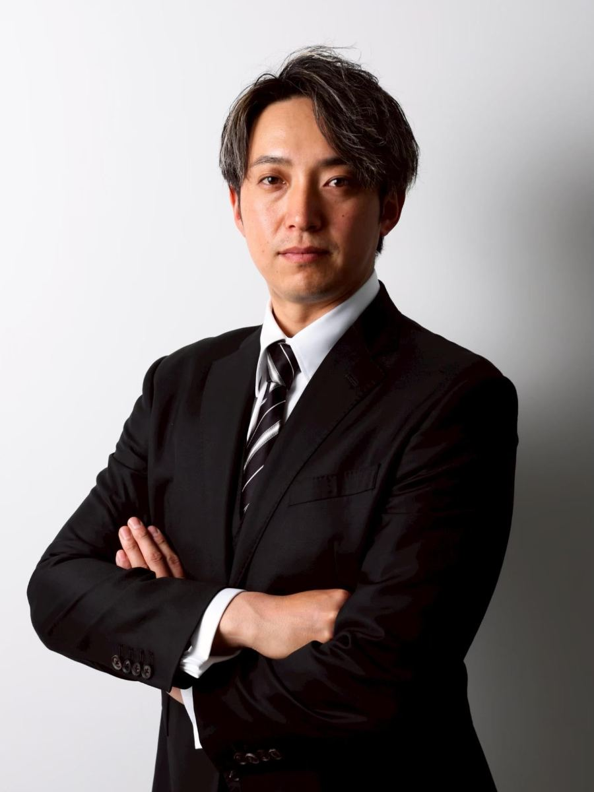
VOL.001 建設・インフラこの記事は、私たちが企業と
向き合う姿勢そのものです。